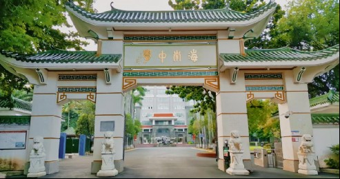

A SCHOOL THAT REMEMBERS · 01
树荫下的
三次停留。
一扇门，一棵树，一池水。沿着能找到出处的片段，重新看见每天经过的校园。
模型内步行路线；不是实地导航。气候与光照为艺术模拟，非实时天气。 此页无需 JavaScript 或 WebGL。

02 / 报道记载 / 既有树位待现场核对
百年榄仁树
在横枝下停一会儿
这条路线指向一号教学楼前的榄仁树，须与北门入口附近的另一株区分。海南日报的百年校庆报道以校园里的百年榄仁树开篇。
枝干姿态为参考照片的艺术重建，树龄没有独立年轮测定。
在三维校园观察 ↗
03 / 照片观察 / 年代待核实
砚池
让楼影落进水里
保留现存水景的观察，不生成虚构的过去。可通过公开全景资料继续比较岸线、树木与建筑关系；其拍摄年代不能代表当前状态。
池岸细节为近似表达；沿用原始矩形空间边界，未完成测绘校准。
360Cities · hkaxiong 的砚池全景入口 ↗
在三维校园观察 ↗